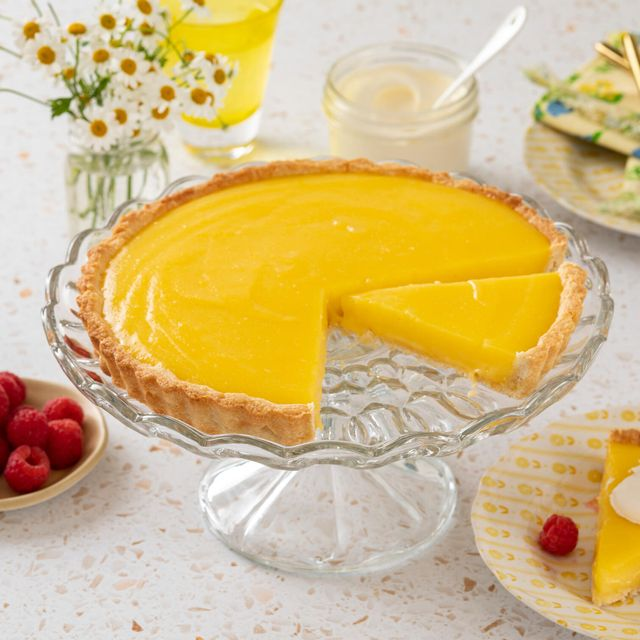

Lemon Tart

Description
Enjoy this classic Italian tart al limone in the summer and the winter. Easy to make and a crowd-pleaser for dessert. Be sure to give yourself about 4 hours to make. Serves 8.
Ingredients
- Finely grated zest & juice of 4 lemons (about 1 cup - 250ml of juice)
- 1 cup (220g) caster sugar
- 3/4 cup (185ml) pure (thin) cream
- 4 eggs, plus 3 egg yolks
- 1 2/3 cups (250g) plain flour
- 70g pure icing sugar, sifted
- 125g unsalted butter, chilled, chopped
- 2 egg yolks